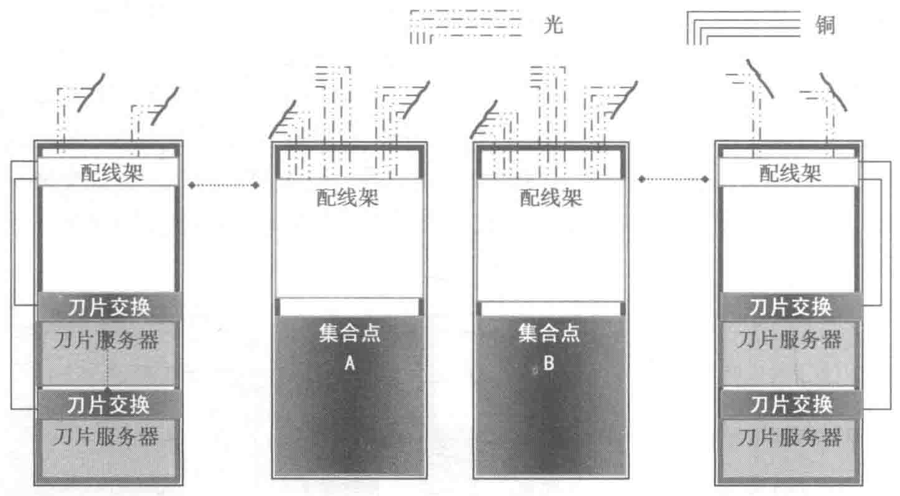

接来延伸到汇聚层。这种设计有助于减少交换机的数量，节省数据中心机架空间，同时降低基建成本和运营成本。

以上几种网络组网方式导致的水平配线区至设备配线区的水平布线系统所采用的器件和缆线数量都大不相同，所以需要先确定交换机的设置位置，然后再决定水平布线系统的设计方案。
7.5 产品分析与应用技术要点
承载数据中心布线系统的产品种类繁多，对布线产品进行选择时，应考虑系统的模块化架构，做到简单灵活、可操作性和实用性强。同时，应具备足够的扩充空间，能够支持未来技术的发展。应根据数据中心的规模和网络的吞吐量，选择合适的供货商和产品配置。
7.5.1 线缆
TIA-942 布线标准认可多种介质类型，用以支持广泛的网络应用。但是建议新建数据中心尽量采用支持高传输带宽的布线介质，以最大化地适应未来网络的传输能力，保持基础布线系统的使用寿命。
TIA-942 标准推荐使用的布线传输介质有如下几种。
1. 100 欧姆平衡双绞线
建议 6 类 /E 级（GB 50311—2007）、6A 类 /EA 级（ANSI/TIA/EIA-568-B.2-10、ISO/IEC11801: 2008）或 F/FA 级（GB 50311—2007, ISO/IEC11801:2008）。GB 50174—2017《数据中心设计规范》中对双绞线的建议是“6A 类及以上对绞电缆”。6A 类线缆由 ANSI/TIA-